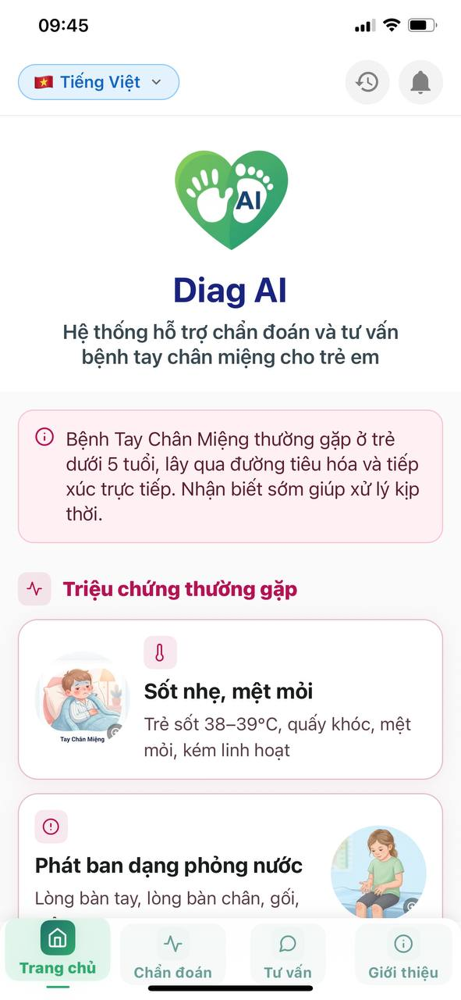
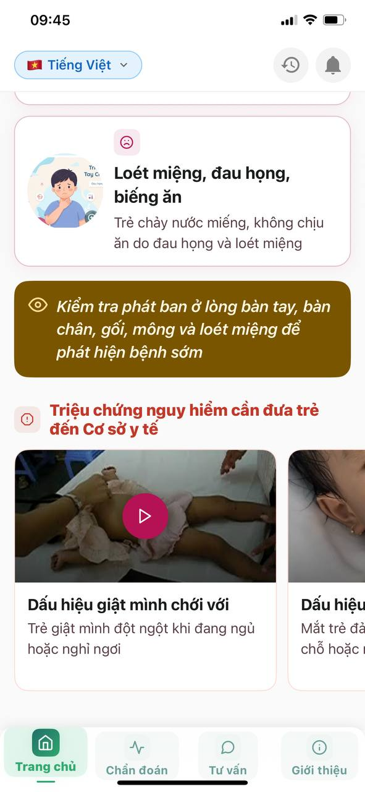
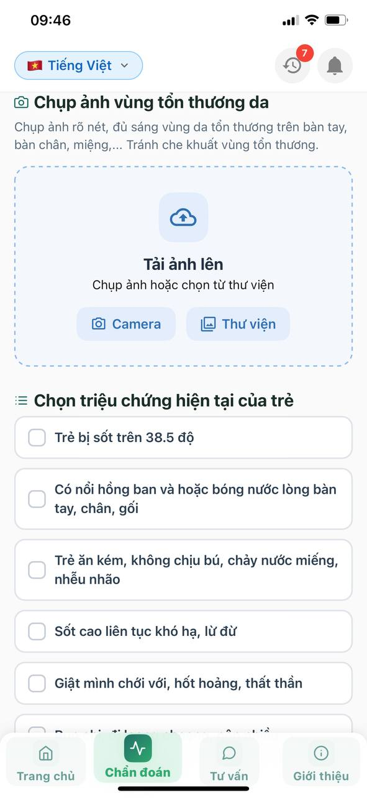
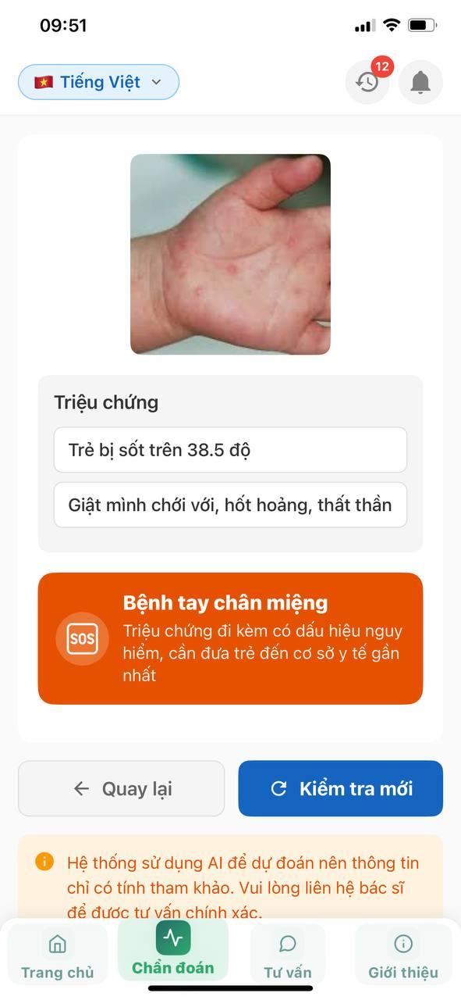
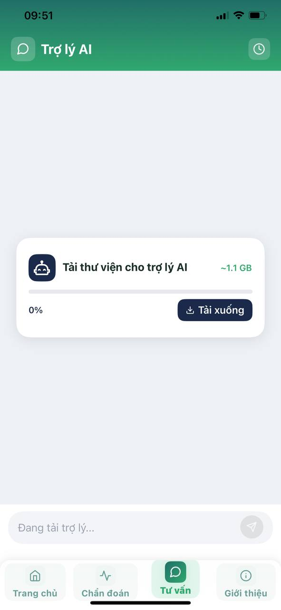
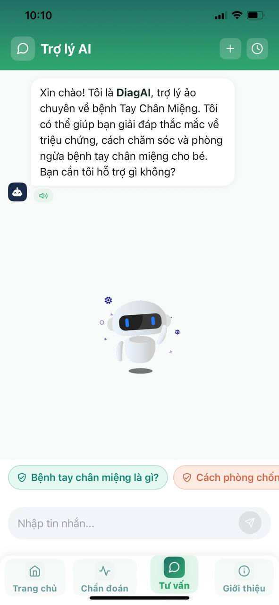
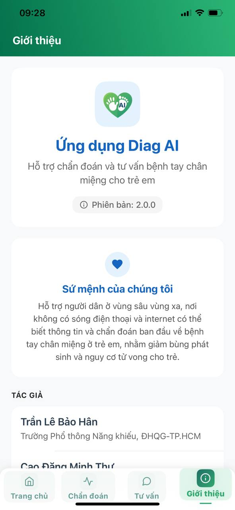

Video Hướng Dẫn Sử Dụng App DiagAI
Quay trực tiếp trên màn hình điện thoại, giúp phụ huynh dễ dàng thao tác chuẩn xác chỉ trong 3 bước nhanh chóng mà không cần bất kỳ kỹ năng công nghệ nào.
Chụp Ảnh Vùng Da Tổn Thương
Mở camera hoặc chọn ảnh từ thư viện, canh khung vuông góc nốt hồng ban/bóng nước ở lòng bàn tay, bàn chân hoặc vòm miệng.
Tích Chọn Triệu Chứng Đi Kèm
Chọn các biểu hiện hiện tại của bé (sốt trên 38.5°C, quấy khóc, biếng ăn, giật mình...) để mô hình AI tăng độ nhạy phân tích.
Xem Kết Quả & Hướng Dẫn Xử Trí
Nhận ngay đánh giá nguy cơ, cảnh báo SOS màu đỏ khi có dấu hiệu nặng và gợi ý cách chăm sóc hoặc cơ sở y tế gần nhất.
Kho Tri Thức & Tuyên Truyền Bệnh Tay Chân Miệng
Được xây dựng như một cẩm nang y tế điện tử bỏ túi, cung cấp ngay những kiến thức chuẩn khoa học từ bác sĩ chuyên khoa Nhi ngay khi mở ứng dụng.
Dấu Hiệu Ban Đầu
Nhận biết sớm triệu chứng sốt nhẹ, mệt mỏi, quấy khóc và biếng ăn ở trẻ dưới 5 tuổi.
Vị Trí Nốt Hồng Ban
Hướng dẫn rà soát kỹ lòng bàn tay, bàn chân, đầu gối, mông và vết loét đau trong vòm họng.
Video Triệu Chứng Nguy Hiểm
Danh sách video minh họa dấu hiệu giật mình chới với, run chi để đưa trẻ đi cấp cứu kịp thời.
Song Ngữ Việt - Anh
Hỗ trợ chuyển đổi ngôn ngữ tức thì, thân thiện với mọi gia đình và khách nước ngoài.


Chẩn Đoán Kết Hợp Hình Ảnh AI & Triệu Chứng Lâm Sàng
Đột phá công nghệ thị giác máy tính: Kết hợp nhận diện vết tổn thương da cùng triệu chứng thực tế của bé để tối ưu hóa độ nhạy và hạn chế tối đa kết quả sai lệch.
Camera Hoặc Thư Viện
Chụp ảnh trực tiếp với gợi ý lấy nét tự động, hoặc chọn ảnh có sẵn đã lưu trong thư viện máy.
Bộ Lọc Triệu Chứng Kèm Theo
Tích chọn nhanh: sốt > 38.5°C, chảy nước miếng, giật mình chới với, run chi... tăng độ chính xác.
Phân Tích AI Tức Thì
Thuật toán đối chiếu hình ảnh tổn thương với bộ dữ liệu ca bệnh thực tế thu thập tại BV Nhi Đồng 1.
Cảnh Báo SOS Khẩn Cấp
Tự động phát tín hiệu cảnh báo màu đỏ khi phát hiện dấu hiệu nguy hiểm cần tới bệnh viện ngay.


Trợ Lý AI Chatbot Tư Vấn Chạy Hoàn Toàn Offline
Đóng gói toàn bộ mô hình ngôn ngữ lớn (LLM) để thực thi trực tiếp trên phần cứng điện thoại, giúp ba mẹ hỏi đáp về bệnh bất kỳ lúc nào mà không cần kết nối Internet.
100% On-Device Offline
Tải bộ dữ liệu AI 1 lần (~1.1 GB), sau đó hoạt động vĩnh viễn không cần mạng 4G/Wifi.
Tư Vấn Chăm Sóc 24/7
Giải đáp cách hạ sốt an toàn, chế độ ăn cho bé đau họng, cách ly và vệ sinh đồ dùng tránh lây lan.
Gợi Ý Câu Hỏi Nhanh
Chạm 1 chạm vào các câu hỏi mẫu như "Bệnh là gì?", "Cách phòng ngừa?", "Khi nào cần đi viện?".
Bảo Mật Dữ Liệu Tuyệt Đối
Mọi câu hỏi và dữ liệu sức khỏe của gia đình đều ở lại trên điện thoại của bạn, không gửi lên đám mây.


DiagAI: Sứ Mệnh Y Tế Số Cho Trẻ Em Vùng Xa
